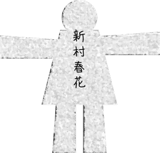
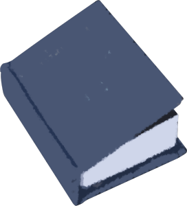
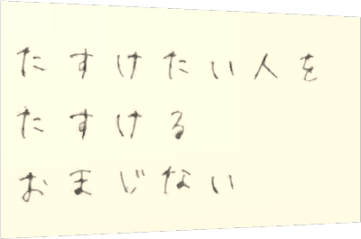
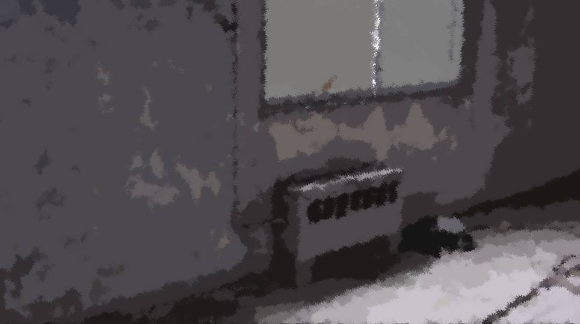
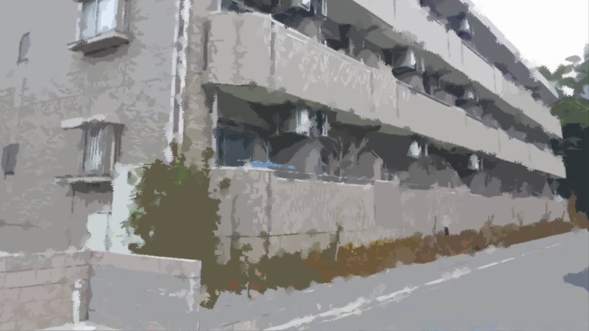
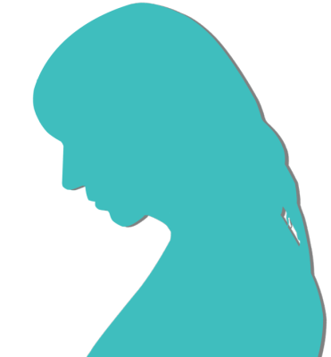
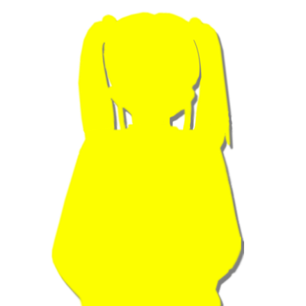

おまじない
「さて、だいぶ盛り上がってきたね。次の人、頼むよ」
おばあさんは左端の紙人形を選んだ。
おばあさんは左端の紙人形を選んだ。


新村春花
「私かあ……」


「ええっと、何を話せばいいかな……。五島の後じゃやりづらいな……」
みんな苦笑いする春花をじっと見つめている。
みんな苦笑いする春花をじっと見つめている。

「ご、ごほん。では始めます」

「私、小さい頃におまじないにはまったことがあったんだ。
特に呪いと言うものに興味を持った。
あの時の私は、黒魔術師の気分だったよ」

――確か小学校2年になる前。
学校の図書室でおまじないの本を物色していると、見慣れない本を見つけたんだ。
学校の図書室でおまじないの本を物色していると、見慣れない本を見つけたんだ。

小学校の本棚には似合わない、大きくて硬いカバーのついた本。
本を開いてみると……。
本を開いてみると……。
ローブをまとった老女がカエルの世話をしている絵や、魔術を使うシーンを描いた絵。
漢字は読めないけど、これは呪いの本だと思った。
その絵を見て楽しんでたんだけど、その中の1ページに、紙が挟まっているのを見つけた。
漢字は読めないけど、これは呪いの本だと思った。
その絵を見て楽しんでたんだけど、その中の1ページに、紙が挟まっているのを見つけた。

その紙には、子供の字で書かれていた。
『たすけたい人をたすけるおまじない』って。
もしかしたら人を助ける方法があるんじゃないかって思った。
『たすけたい人をたすけるおまじない』って。
もしかしたら人を助ける方法があるんじゃないかって思った。
図書室にいた先生に、紙が挟まっていたページを読んでもらうと、
「助けたい人がいるなら、このページに書いていることをやりなさい。 でも、その人を助けられないと、あなたは10年後に死ぬかもしれません」
と書かれていたそうだ。
「助けたい人がいるなら、このページに書いていることをやりなさい。 でも、その人を助けられないと、あなたは10年後に死ぬかもしれません」
と書かれていたそうだ。
このおまじないをやれば、当時病んでいたお母さんが元気になるかもしれない。
でも私は大人になる前に死ぬかもしれない。
怖かったけど、私はどうしても助けたいって思うようになった。
でも私は大人になる前に死ぬかもしれない。
怖かったけど、私はどうしても助けたいって思うようになった。
迷ったけど、私はそれをやることにした。
方法は簡単。1番の友達の顔を思い浮かべながら、本に書かれた紋章を紙に書いて、それをずっと持っておくこと。
紋章は子供でも描ける程度のものだった。
方法は簡単。1番の友達の顔を思い浮かべながら、本に書かれた紋章を紙に書いて、それをずっと持っておくこと。
紋章は子供でも描ける程度のものだった。
その夜、不思議な夢を見た。

まぶしい光に包まれた、女神さまが現れたんだ。
私はその風景をうっとりと見ていた。
そして女神さまは言った。
私はその風景をうっとりと見ていた。
そして女神さまは言った。
「まずは大好きな友達を助けなさい。
そうすれば、あなたのお母さんも助かるでしょう」
そんな不思議な夢だった。
でもその友達は離れたところに住んでいる。
私はちょっとがっかりしてしまった。
でもその友達は離れたところに住んでいる。
私はちょっとがっかりしてしまった。
でもそれから何日かして朝起きたら、


その友達が私の隣で寝てたんだ。
びっくりしたけど、嬉しかった。
でも、その後の記憶が少し抜けててさ。
ぼんやりと覚えてるのは、その友達が誰かに襲われて、かばって頭を殴られたこと。
夢のことは関係なしで、とにかく必死で守ろうとした。
びっくりしたけど、嬉しかった。
でも、その後の記憶が少し抜けててさ。
ぼんやりと覚えてるのは、その友達が誰かに襲われて、かばって頭を殴られたこと。
夢のことは関係なしで、とにかく必死で守ろうとした。



元木町に戻ってからお母さんはどんどん元気になって、友達もすぐ近くにいて、私、今とても幸せ。
私は人を呪うよりも、助けることにおまじないを使おうって思った。
私は人を呪うよりも、助けることにおまじないを使おうって思った。
「その友達って言うのは、もちろんなつみのこと。
なつみがあの時私のところに来てくれたのおかげで、お母さんも元気になったし、私も今こうしていられる。
ありがとな、なつみ」

おばさんがボロボロと涙をこぼしている。
みんなも少し鼻をすすっている。
私もほとんど覚えていないけど、春花の役に立てたみたいで素直に嬉しい。
みんなも少し鼻をすすっている。
私もほとんど覚えていないけど、春花の役に立てたみたいで素直に嬉しい。

「うう……新村先輩……。本当に良かったですね……」
五島もおばさんに負けじと泣き出した。
でもこれは怪談ではなく、ただのいい話なのでは？
五島もおばさんに負けじと泣き出した。
でもこれは怪談ではなく、ただのいい話なのでは？

「くう……くう……」
夏菜ちゃんには退屈だったのか、いつの間にか眠っていた。
夏菜ちゃんには退屈だったのか、いつの間にか眠っていた。

「なつみちゃんと春花の仲は、昔からよく聞いていたよ。
これからも、2人とも仲良くね」
おばあさんは、にこやかに言ってくれた。
おばあさんは、にこやかに言ってくれた。
Read ✓ Next in this arc →